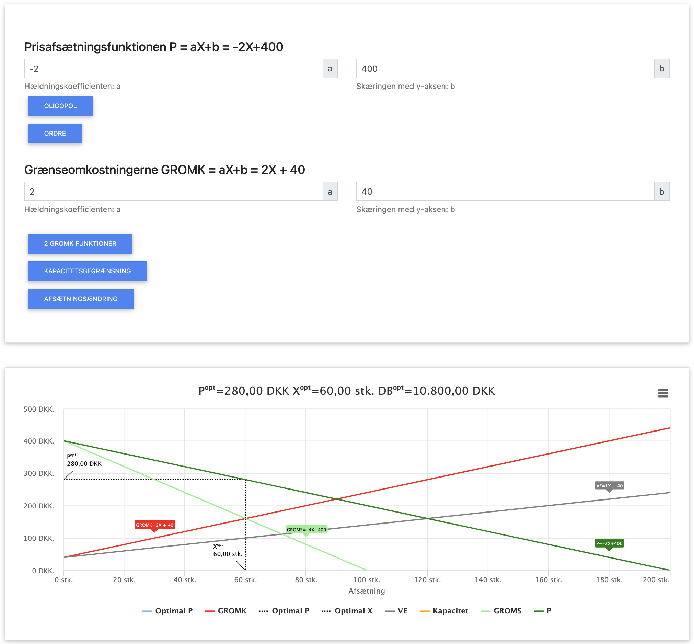
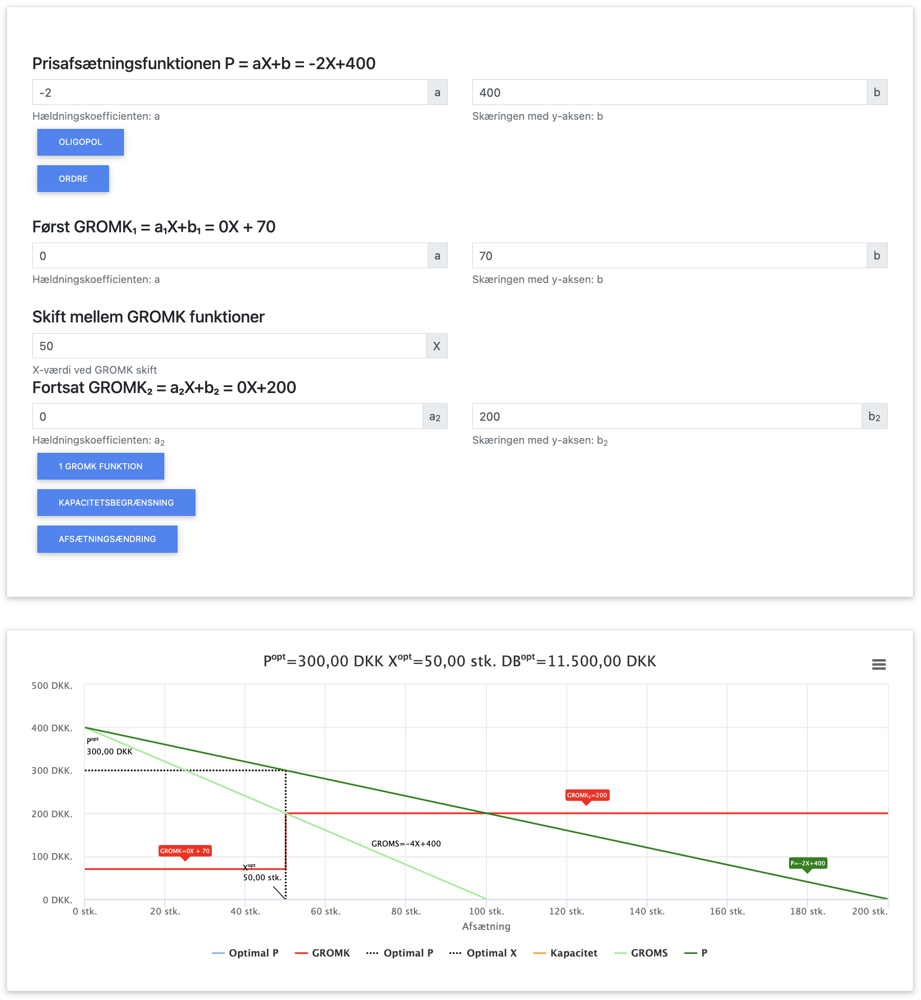

Monopol

Monopol er en markedsform, hvor én enkelt virksomhed er den eneste udbyder af et produkt eller en ydelse. Der er ingen direkte konkurrenter, og produktet har ingen nære substitutter. Dette giver virksomheden betydelig markedsmagt til at påvirke prisen.
I modsætning til virksomheder under fuldkommen konkurrence er monopolisten prissætter i stedet for pristager, hvilket betyder at virksomheden selv kan bestemme sin pris.
I dette kapitel benytter vi følgende forkortelser:
- P = Pris
- X = Mængde
- OMS = Omsætning (P × X)
- VO = Variable omkostninger (VE × X)
- FO = Faste omkostninger
- VE = Variable enhedsomkostninger (VO / X)
- GROMS = Grænseomsætning (OMS' = ændring i omsætning ved ændring i afsat mængde X)
- GROMK = Grænseomkostninger (TO' = ændring i totale omkostninger ved ændring i afsat mængde X)
- DB = Dækningsbidrag (OMS - VO)
- TO = Totale omkostninger (FO + VO)
- TE = Totale enhedsomkostninger (TO / X)
I dette kapitel fokuserer vi på:
- Hvordan en monopolvirksomhed optimerer sin produktion
- Forskellen mellem optimering under monopol og fuldkommen konkurrence
- Beregning af optimal mængde, pris, omsætning og dækningsbidrag
- Sammenhængen mellem grænseomsætning (GROMS) og grænseomkostninger (GROMK)
- Et gennemgående beregningseksempel
Grundlæggende principper for monopol
Under monopol gælder følgende principper:
- Virksomheden er prissætter, ikke pristager
- Der eksisterer en negativ sammenhæng mellem pris og efterspurgt mængde
- Grænseomsætningen (GROMS) er altid lavere end prisen
- Den optimale mængde findes hvor GROMS = GROMK
- Virksomheden kan påvirke både pris og mængde for at maksimere profit
Forskellen mellem fuldkommen konkurrence og monopol
Den fundamentale forskel mellem fuldkommen konkurrence og monopol er:
- Fuldkommen konkurrence: P = GROMS = GROMK (virksomheden er pristager)
- Monopol: P > GROMS = GROMK (virksomheden er prissætter)
Dette betyder, at under monopol vil grænseomsætningen falde, når virksomheden øger sin produktion. For at sælge mere må virksomheden sænke prisen, hvilket påvirker omsætningen på alle enheder.
Efterspørgselsfunktion og afsætningsfunktion
Ved monopol er virksomheden nødt til at tage højde for, at den selv kan påvirke prisen. Dette beskrives med en afsætningsfunktion eller efterspørgselsfunktion, som viser sammenhængen mellem pris og efterspurgt mængde.
Optimering under monopol
For at maksimere profit skal en monopolvirksomhed producere den mængde, hvor:
GROMS = GROMK
Grænseomsætningen (GROMS) er den ekstra omsætning, virksomheden får ved at sælge én enhed mere. Under monopol er GROMS altid lavere end prisen, fordi virksomheden må sænke prisen på alle enheder for at sælge mere.
Gennemgående beregningseksempel
Lad os arbejde med et konkret eksempel på en virksomhed med monopol:
Forudsætninger:
- Efterspørgselsfunktion: P = -2X + 400
- Faste omkostninger (FO) = 1.000 kr.
- Variable enhedsomkostninger (VE) = X + 40 kr. pr. enhed
App løsning
Herover ses input og output i appen. Du kan hente appen herunder:
App til optimering
Trin 1: Finder omsætnings- og grænseomsætningsfunktionerne
Omsætning: OMS = P × X = (-2X + 400) × X = -2X² + 400X
Grænseomsætning: GROMS = den afledte af OMS med hensyn til X = -4X + 400
Trin 2: Finder omkostnings- og grænseomkostningsfunktionerne
Metode 1: Ud fra VO og TO
Variable omkostninger: VO = VE × X = (X + 40) × X = X² + 40X
Totale omkostninger: TO = FO + VO = 1.000 + X² + 40X
GROMK = den afledte af TO med hensyn til X = 2X + 40
Metode 2: Ud fra VE
GROMK = VE + X × (ændring i VE pr. enhed)
VE = X + 40
Ændring i VE pr. enhed = 1
GROMK = (X + 40) + X × 1 = X + 40 + X = 2X + 40
Trin 3: Bestemmer den optimale produktionsmængde
Optimalitetsbetingelse: GROMS = GROMK
-4X + 400 = 2X + 40
-4X - 2X = 40 - 400
-6X = -360
X = 360 ÷ 6 = 60 enheder
Trin 4: Beregner den optimale pris
P = -2X + 400 = -2 × 60 + 400 = -120 + 400 = 280 kr.
Trin 5: Beregner overskud ved optimal produktion
X = 60 enheder
P = 280 kr.
OMS = P × X = 280 × 60 = 16.800 kr.
VE = X + 40 = 60 + 40 = 100 kr. pr. enhed
VO = VE × X = 100 × 60 = 6.000 kr.
DB = OMS - VO = 16.800 - 6.000 = 10.800 kr.
OVS = DB - FO = 10.800 - 1.000 = 9.800 kr.
Fortolkning: Den optimale pris er 280 kr., og den optimale produktionsmængde er 60 enheder. Ved denne pris og mængde opnår monopolisten et overskud på 9.800 kr.
Oversigt over resultaterne
| Parameter | Værdi |
|---|---|
| Optimal mængde (X) | 60 enheder |
| Optimal pris (P) | 280 kr. |
| Omsætning (OMS) | 16.800 kr. |
| Variable enhedsomkostninger (VE) | 100 kr. |
| Variable omkostninger (VO) | 6.000 kr. |
| Dækningsbidrag (DB) | 10.800 kr. |
| Faste omkostninger (FO) | 1.000 kr. |
| Resultat | 9.800 kr. |
| GROMS ved optimal mængde | -4 × 60 + 400 = 160 kr. |
| GROMK ved optimal mængde | 2 × 60 + 40 = 160 kr. |
Kapacitetsbegrænsning ved optimering
I praksis kan monopolister støde på kapacitetsbegrænsninger. Lad os se hvad der sker, hvis vores virksomhed fra eksemplet har en maksimal produktionskapacitet på 20 enheder.
Kapacitetsbegrænsning
Antag at virksomheden har en kapacitetsbegrænsning på 40 enheder. Det betyder, at selvom den optimale produktionsmængde er 60 enheder, kan virksomheden maksimalt producere 40 enheder.
Ved X = 40:
P = -2X + 400 = -2 × 40 + 400 = -80 + 400 = 320 kr.
GROMS = -4X + 400 = -4 × 40 + 400 = -160 + 400 = 240 kr.
GROMK = 2X + 40 = 2 × 40 + 40 = 80 + 40 = 120 kr.
Beregning af overskud:
X = 40 enheder
P = 320 kr.
OMS = P × X = 320 × 40 = 12.800 kr.
VE = X + 40 = 40 + 40 = 80 kr. pr. enhed
VO = VE × X = 80 × 40 = 3.200 kr.
DB = OMS - VO = 12.800 - 3.200 = 9.600 kr.
OVS = DB - FO = 9.600 - 1.000 = 8.600 kr.
Fortolkning: Med kapacitetsbegrænsningen producerer virksomheden 40 enheder i stedet for 60, hvilket resulterer i et overskud på 8.600 kr. Dette er 1.200 kr. mindre end ved den optimale mængde på 60 enheder. Bemærk at GROMS > GROMK ved kapacitetsgrænsen, hvilket betyder at virksomheden ville tjene mere på at producere mere, hvis kapaciteten tillod det.

Herover ses input og output i appen ved kapacitetsbegrænsning. Du kan hente appen herunder:
App til optimering
GROMK som trappefunktion
Antag at virksomhedens omkostningsstruktur er anderledes, med konstante marginale omkostninger inden for to intervaller:
- For X ≤ 50: GROMK = 70 kr.
- For X > 50: GROMK = 200 kr.
Denne omkostningsstruktur kunne skyldes overarbejdsbetaling eller behov for nye maskiner efter 50 enheder.
Optimal produktion:
Vi skal sammenligne GROMS ved X = 50 med GROMK i begge intervaller:
GROMS ved X = 50: -4 × 50 + 400 = -200 + 400 = 200 kr.
GROMK ved X = 50: 70 kr.
GROMK ved X = 51: 200 kr.
Da GROMS > GROMK ved X = 50 (200 kr. > 70 kr.), men GROMS < GROMK ved X=51 (196 kr. < 200 kr.), er den optimale produktionsmængde X=50 enheder, lige præcis ved knækpunktet i trappefunktionen.
Beregning af optimal pris og overskud:
P = -2X + 400 = -2 × 50 + 400 = -100 + 400 = 300 kr.
OMS = P × X = 300 × 50 = 15.000 kr.
VO = 70 × 50 = 3.500 kr. (da GROMK = VE = 70 kr. for alle enheder op til 50)
DB = OMS - VO = 15.000 - 3.500 = 11.500 kr.
OVS = DB - FO = 11.500 - 1.000 = 10.500 kr.
Fortolkning: Med den trinvise omkostningsstruktur er den optimale produktionsmængde præcis 50 enheder med en pris på 300 kr., hvilket resulterer i et overskud på 10.500 kr. Virksomheden stopper produktionen præcis ved grænsen på 50 enheder, da det ikke kan betale sig at producere mere når GROMK stiger til 200 kr.
Bemærk at dette resultat faktisk er bedre end i vores oprindelige eksempel, hvor vi havde et overskud på 9.800 kr. ved en produktion på 60 enheder. Den lavere GROMK-værdi på 70 kr. (mod tidligere 2X + 40) gør en positiv forskel for rentabiliteten, selvom vi producerer lidt mindre.
| Parameter | Oprindeligt eksempel | Trappefunktion |
|---|---|---|
| Optimal mængde (X) | 60 enheder | 50 enheder |
| Optimal pris (P) | 280 kr. | 300 kr. |
| Omsætning (OMS) | 16.800 kr. | 15.000 kr. |
| Variable omkostninger (VO) | 6.000 kr. | 3.500 kr. |
| Dækningsbidrag (DB) | 10.800 kr. | 11.500 kr. |
| Resultat | 9.800 kr. | 10.500 kr. |
| GROMK ved optimal mængde | 160 kr. | 70 kr. |

Herover ses input og output i appen ved GROMK som trappefunktion. Du kan hente appen herunder:
App til optimering
Sammenfatning af kapitlet
Under monopol er optimeringsreglen: Producér den mængde, hvor GROMS = GROMK. Dette skyldes, at virksomheden kan påvirke sin pris ved at ændre mængden.
Nøgleobservationer:
- Hvis GROMS > GROMK, bør virksomheden øge produktionen
- Hvis GROMS < GROMK, bør virksomheden reducere produktionen
- Hvis GROMS = GROMK, har virksomheden fundet den optimale produktionsmængde
- P > GROMS ved den optimale mængde (i modsætning til fuldkommen konkurrence, hvor P = GROMS)
- En monopolist vil generelt tage en højere pris og producere mindre end under fuldkommen konkurrence
- For lineære funktioner gælder:
- Når P = -bX + a, er GROMS = -2bX + a (dobbelt så stejl hældning)
- Når VE = dX + c, er GROMK = 2dX + c (dobbelt så stejl hældning)